Taller de Windows 7
Aplicaciones
Utilizar e instalar aplicaciones en Windows 7
Apreta la tecla → para avanzar.


En informática, una aplicación es un tipo de programa informático diseñado como herramienta para permitir a un usuario realizar uno o diversos tipos de trabajos.
Ejemplos de aplicaciones:

Hay algunas aplicaciones que ya vienen pre-instaladas en Windows 7, y que podemos utilizar directamente.
Algunas de las aplicaciones preinstaladas en Windows 7:


 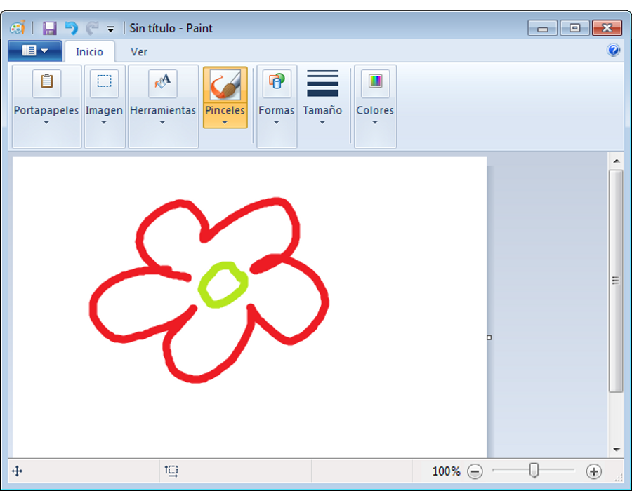
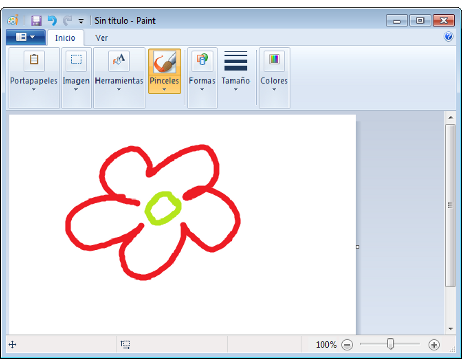
Cambia de foto con las teclas: ↑ y ↓
Hay muchas otras aplicaciones que no vienen pre-instaladas en Windows 7, y que deberemos instalar para poder utilizarlas. El método más común de acceder a estas aplicaciones es descargarlas a través de Internet. Algunas de las aplicaciones más famosas:
 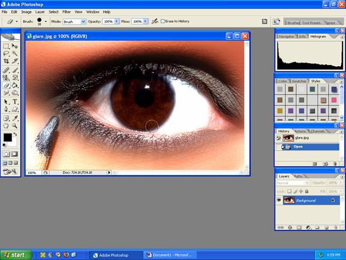
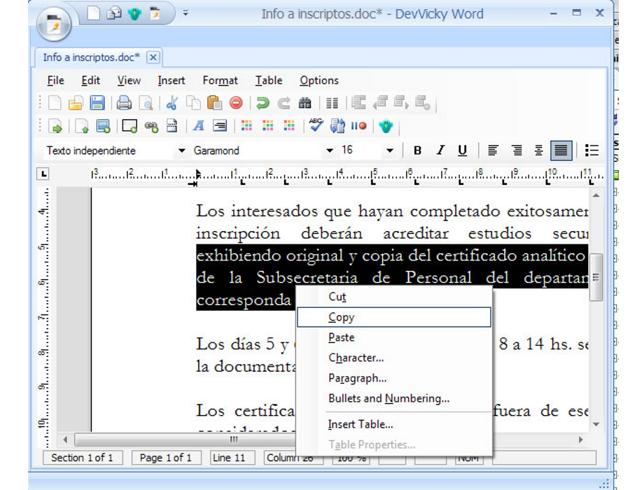
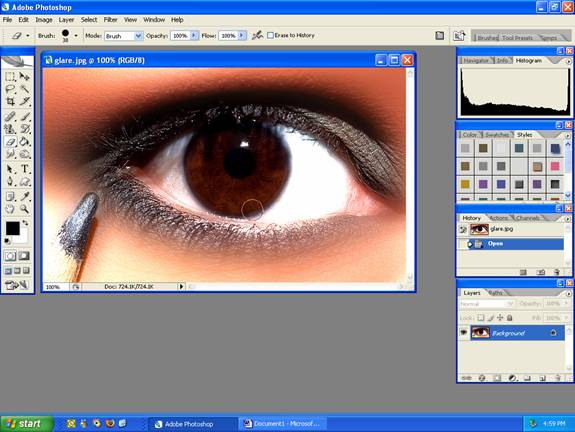
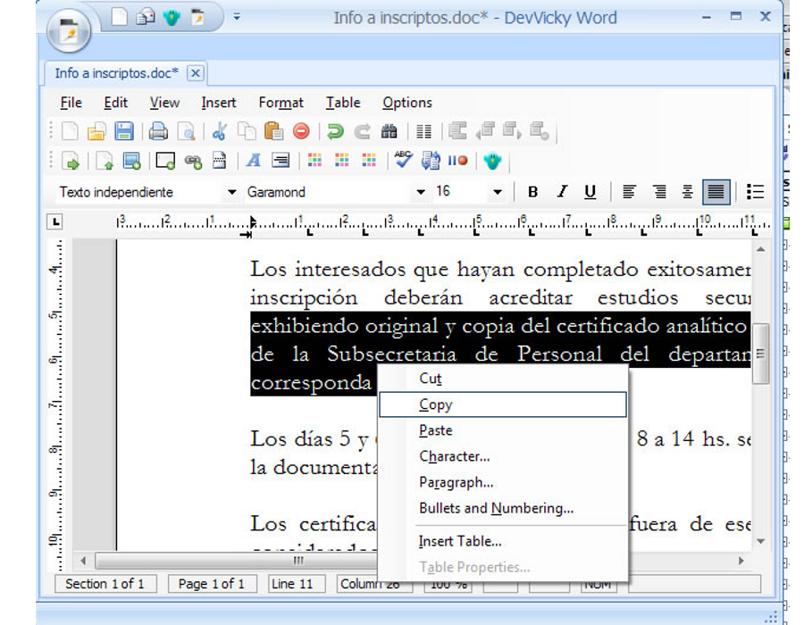

Cambia de foto con las teclas: ↑ y ↓

El mundo del software rige su economía siguiendo un sistema de licencias con dos vertientes muy diferenciadas:
Se llama piratería al hecho de instalar una aplicación sin haber cumplido los términos estipulados en su correspondiente licencia.
Si el software que nos acostumbramos a utilizar es software con licencias abiertas, NUNCA incurriremos en un delito de piratería.

El proceso de instalación de software es un proceso delicado que requiere tener los permisos adecuados para modificar el ordenador (permisos de administrador).
En los ordenadores de la UJI no disponemos de esos permisos, por lo que no podemos realizar instalación de software, pero no os preocupéis porque con el software que tenemos instalado de serie podemos funcionar perfectamente para este curso de nivel básico.
WordPad es un procesador de textos básico que se incluye con casi todas las versiones de Microsoft Windows desde Windows 95 en adelante. Es más avanzado que el Bloc de notas pero más sencillo que el procesador de textos de Microsoft Works y Microsoft Word.
En Windows 7 han renovado totalmente la interfaz de WordPad, haciéndola similar a la nueva interfaz de Office 2010.

Cambia de foto con las teclas: ↑ y ↓
Es una aplicación de edición de textos básica, podemos utilizarla para:
WordPad es una aplicación y por tanto debemos abrirla. Veamos donde está ubicada para poder abrirla.
Vamos a ver las herramientas que nos proporciona WordPad para la edición de textos.
Cambia de foto con las teclas: ↑ y ↓
Comentemos las principales herramientas de las que disponemos en WordPad para dar formato a nuestro documento.

 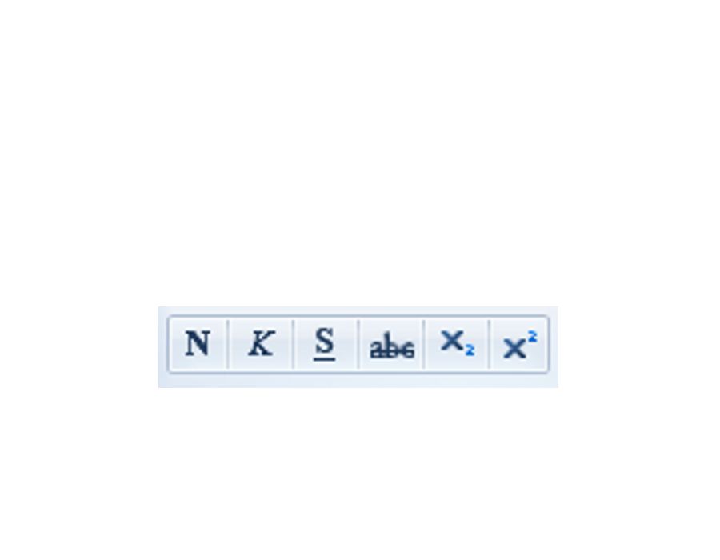
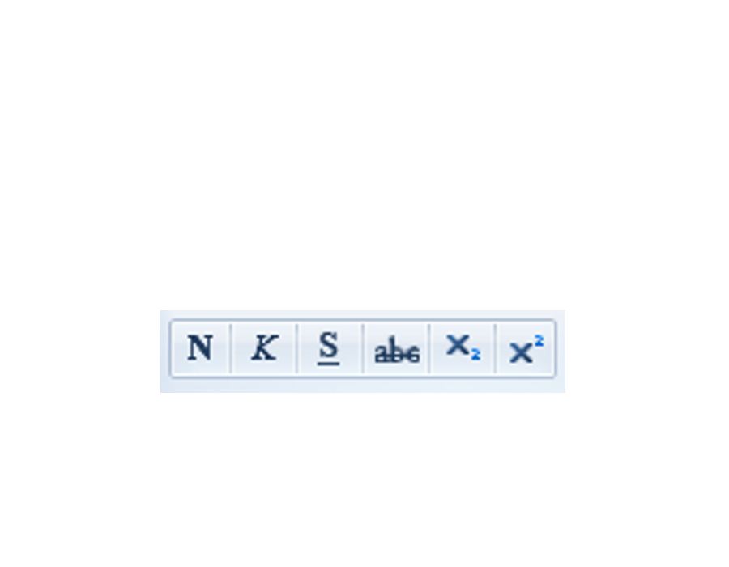
 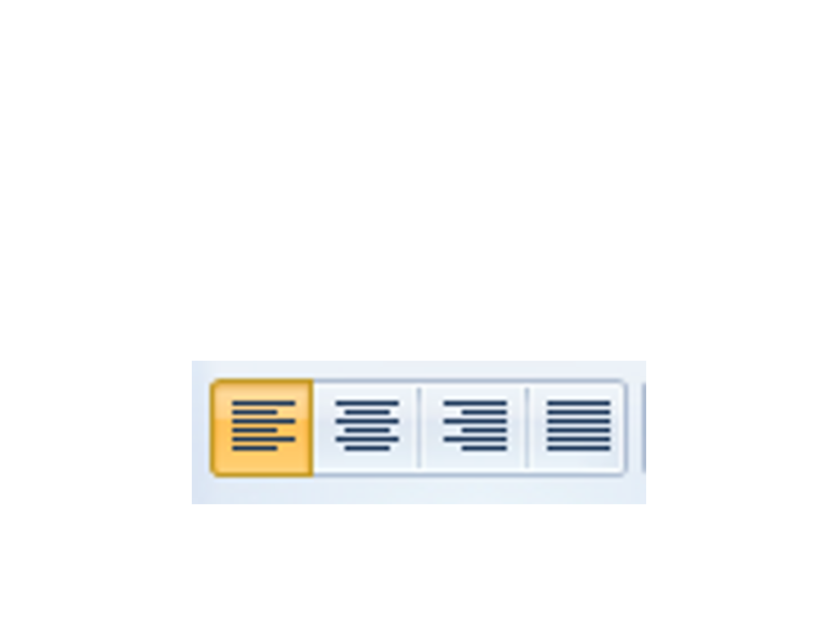
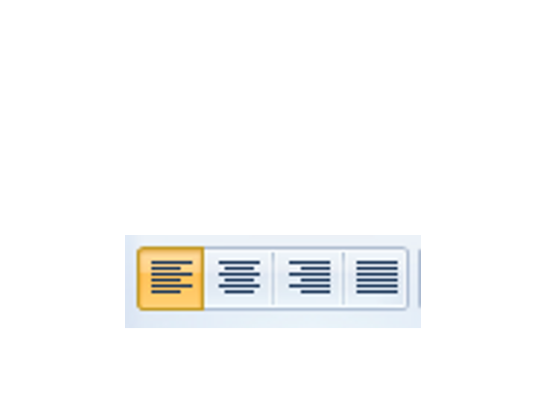

Cambia de foto con las teclas: ↑ y ↓
Cambia de foto con las teclas: ↑ y ↓
En la pantalla siempre vemos el puntero del ratón que podremos mover para seleccionar texto o aplicar formatos.
Pero si os fijáis veréis también un cursor parpadeante, es el cursor de edición que indica dónde empezaremos a escribir cuando tecleemos.
Vamos a explicar ahora una de las técnicas básicas de la edición de textos, que nos permitirá acelerar muchísimo la creación de documentos que hagamos.
 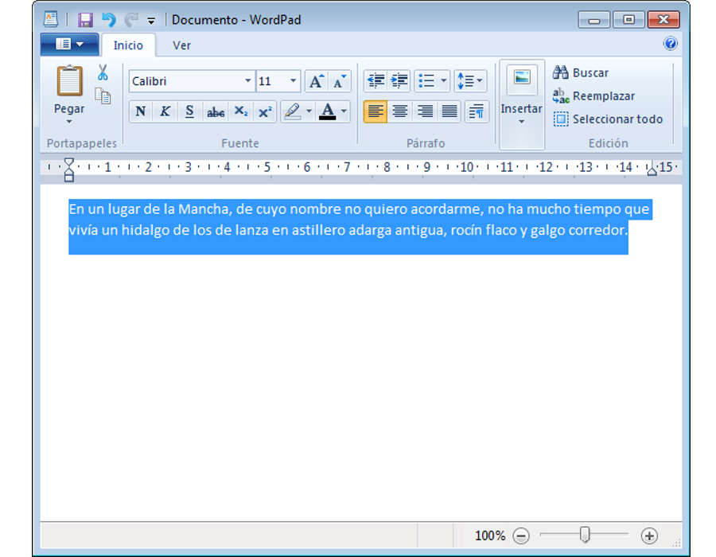
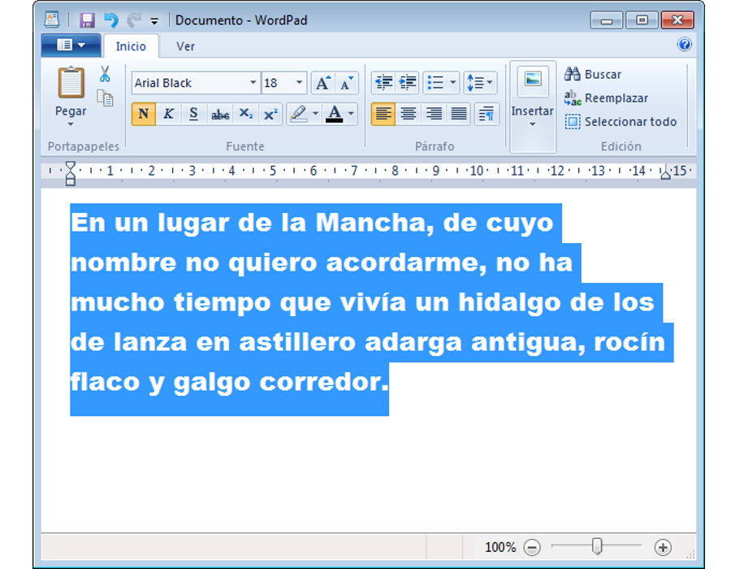
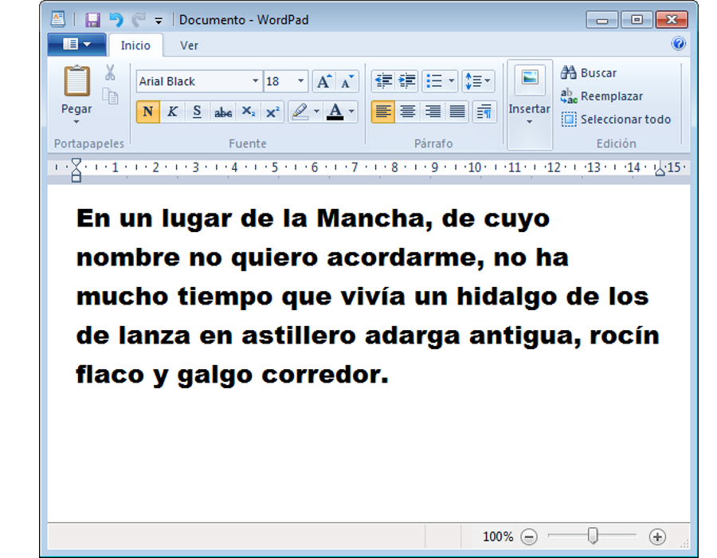
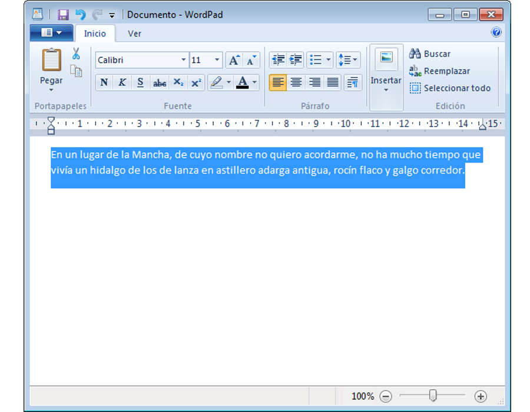
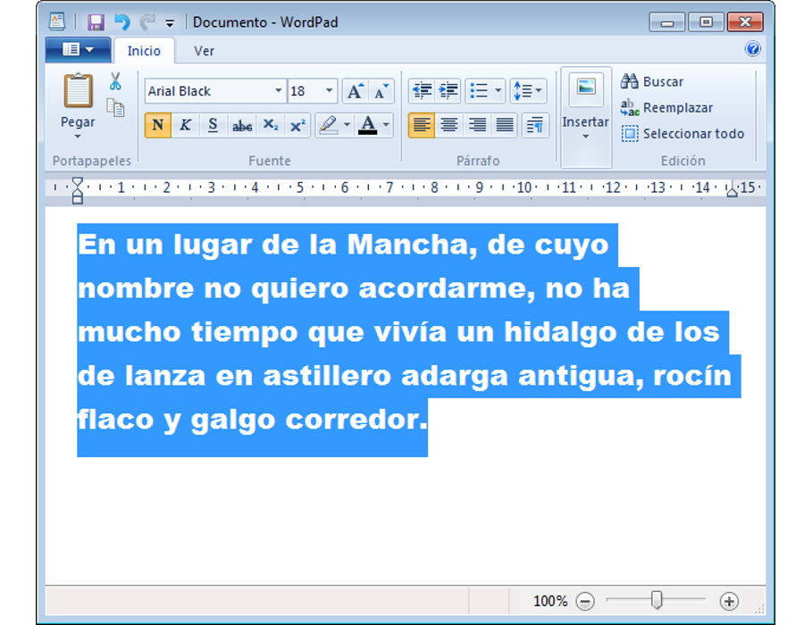
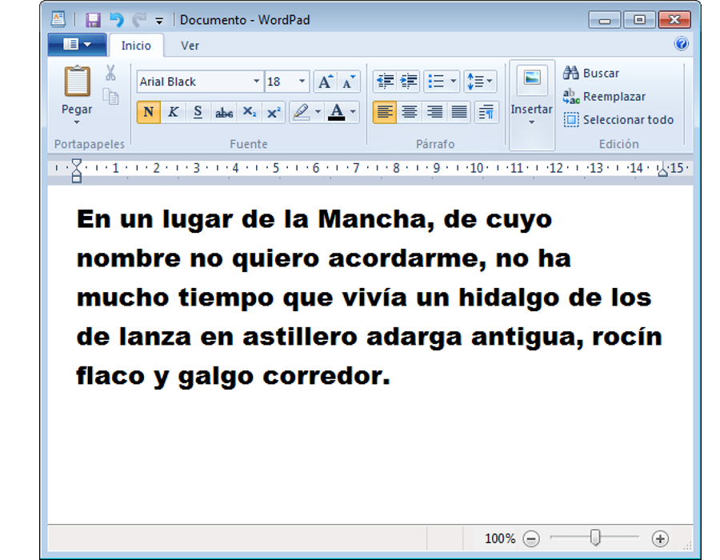
Cambia de foto con las teclas: ↑ y ↓